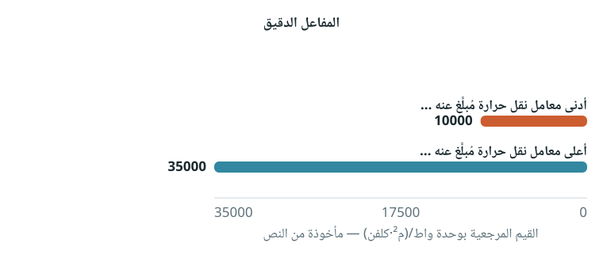

المفاعل الدقيق
Microreactor
المفاعل الدقيق مفاعل كيميائي تجري فيه التفاعلات داخل قنوات عرضها في حدود المليمتر أو أقل، فترتفع نسبة المساحة إلى الحجم ارتفاعاً كبيراً، ويصبح نقل الحرارة والكتلة أسرع والتحكم في الزمن أضبط.
المفاعل الدقيق جهاز تفاعل تُصنع فيه مسارات التدفق بأبعاد صغيرة، وتُبنى عادةً من صفائح ذات قنوات دقيقة متراصّة. ويصنّفه Stankiewicz وMoulijn ضمن معدات التكثيف التي تُجري تفاعلات كيميائية، ويذكر أن القنوات في صفائح مبادلات الحرارة ذات القنوات الدقيقة تكون عادةً في حدود المليمتر أو أقل عرضاً، وأنها تُصنع بالحفر الدقيق على السيليكون أو بالطباعة الحجرية بالأشعة السينية العميقة أو بالتشغيل الدقيق غير الطباعي. وتُرتَّب الصفائح متراكبةً في بنية ساندويتش، وتتيح جميع أشكال التدفق: المتوازي والمتعاكس والمتقاطع. ويشرح المصدر أن معدلات نقل الحرارة العالية جداً المتاحة في المفاعلات الدقيقة تسمح بتشغيل العمليات الشديدة الطاردة للحرارة عند ثبات حراري، وهو أمر مهم خصوصاً في الدراسات الحركية. ويضيف أن نسبة حجم التفاعل الصغير إلى مساحة السطح تجعل المفاعلات الدقيقة جاذبة للعمليات التي تتضمن مواد سامة أو متفجرة. ويشير كذلك إلى أن المقياس الذي تصبح عنده العمليات القائمة على بطاريات من مفاعلات دقيقة متعددة مجدية اقتصادياً وتقنياً ما زال بحاجة إلى تحديد.
كيف تعمل الظاهرة؟
الآلية تقوم على تقليص البعد الذي تنتقل عبره الحرارة أو الكتلة. فحين يكون عرض القناة في حدود المليمتر، تصبح المسافة التي تقطعها الحرارة إلى الجدار قصيرة جداً، فتنخفض المقاومة الحرارية في السائل انخفاضاً كبيراً. وترتفع في المقابل نسبة مساحة الجدار إلى حجم السائل، فتصبح مساحة التبادل المتاحة لكل وحدة حجم كبيرة. ونتيجة لذلك يمكن سحب حرارة تفاعل طارد بسرعة تكفي لإبقاء الحرارة عند حدّ ضيّق، وهو ما يسمّيه المصدر التشغيل عند ثبات حراري. ويضاف إلى ذلك أن حجم السائل المحتجز صغير، فكمية المادة المعرّضة للخطر في أي لحظة تبقى محدودة.
العلاقة بالأرقام
الأرقام المنشورة في المصدر تُقاس بوحدات محددة: عرض القناة بالمليمتر، ومعامل نقل الحرارة بالواط لكل متر مربع لكل كلفن. ويذكر المصدر أن القيم المُبلَّغ عنها في مبادلات الحرارة ذات القنوات الدقيقة تتراوح بين 10000 و35000 واط لكل متر مربع لكل كلفن. ويُقارَن هذا الرقم عادةً بما تحققه المبادلات التقليدية، لكن المصدر لا يقدّم في الصفحات المقروءة رقماً مقابلاً صريحاً، فلا يُنسب إليه. أما القيمة الحدّية لعرض القناة فهي مليمتر واحد أو أقل، وهي حدّ أعلى لا متوسّط.
مفاهيم متقاربة
التمييز الحاسم بين المفاعل الدقيق والمفاعل الصغير الحجم أن العبرة ببنية المسار لا بسعة الوعاء. فمفاعل مخبري سعته ملّيلترات قد يكون وعاءً مقلّباً صغيراً، وفيه تبقى المسافة الحرارية من المركز إلى الجدار طويلة نسبياً. أما المفاعل الدقيق فكل نقطة في السائل قريبة من جدار مبرَّد. ويترتب على هذا الفرق أن المفاعل الدقيق يضبط الحرارة والزمن ضبطاً لا يوفّره التصغير وحده. والتمييز الثاني أن المفاعل الدقيق ليس مبادلاً حرارياً: بنيته قد تشبه بنية المبادل، لكن وظيفته إجراء تفاعل.
حدود التطبيق
للمفاعل الدقيق حدود يذكرها المصدر صريحاً. أولاً، المقياس الذي تصبح عنده العمليات القائمة على بطاريات من مفاعلات دقيقة متعددة مجدية اقتصادياً وتقنياً ما زال بحاجة إلى تحديد، فالتوسيع ليس محلولاً. ثانياً، نسبة حجم التفاعل الصغير إلى مساحة السطح تجعل الجهاز جاذباً للمواد السامة أو المتفجرة، لكنها تعني أيضاً أن الإنتاجية لكل وحدة تحتاج إلى عدد كبير من الوحدات. ثالثاً، التصنيع يحتاج تقنيات حفر دقيقة متخصصة، وهي قيد هندسي لا يُغفل عند التقدير. وهذه حدود مذكورة في المصدر، لا استنتاج من غياب بيانات.

| الكمية | القيمة | المصدر |
|---|---|---|
| عرض القنوات في صفائح مبادلات الحرارة ذات القنوات الدقيقة | 1 مليمتر أو أقل | [1] |
| أدنى معامل نقل حرارة مُبلَّغ عنه في مبادلات القنوات الدقيقة | 10000 واط/(م²·كلفن) | [1] |
| أعلى معامل نقل حرارة مُبلَّغ عنه في مبادلات القنوات الدقيقة | 35000 واط/(م²·كلفن) | [1] |
المصادر
- 1 Process Intensification: Transforming Chemical Engineering — American Institute of Chemical Engineers (2000). www.aiche.org/sites/default/files/docs/news/010022_cep_stankiewicz.pdf · اطُّلع عليه 2026-11-28
- 2 Microreactors: New Technology for Modern Chemistry — Wiley-VCH (2000). doi.org/10.1002/3527601953 · اطُّلع عليه 2026-11-28
- 3 Chemistry in Microstructured Reactors — Wiley-VCH (Angewandte Chemie International Edition) (2004). doi.org/10.1002/anie.200300577 · اطُّلع عليه 2026-11-28
استشهد بهذا المصطلح
الصيغتان مبنيتان من بيانات الصفحة نفسها: العنوان والتاريخ ورابط النسخة المنشورة.
المفاعل الدقيق — Microreactor. (2026). ديوان المعرفة — انفراد. https://infiradev.com/diwan/terms/term-microreactor.html
@misc{term-microreactor2026,
title = {المفاعل الدقيق},
titleaddon = {Microreactor},
howpublished = {{ديوان المعرفة — انفراد} — مرجع علمي عربي},
year = {2026},
url = {https://infiradev.com/diwan/terms/term-microreactor.html},
urldate = {2026-11-28},
note = {مراجعة علمية: Abdullah Al-Huwaidi}
}
راجعه: Abdullah Al-Huwaidi · 2026-11-28 · آخر تحديث 2026-11-28